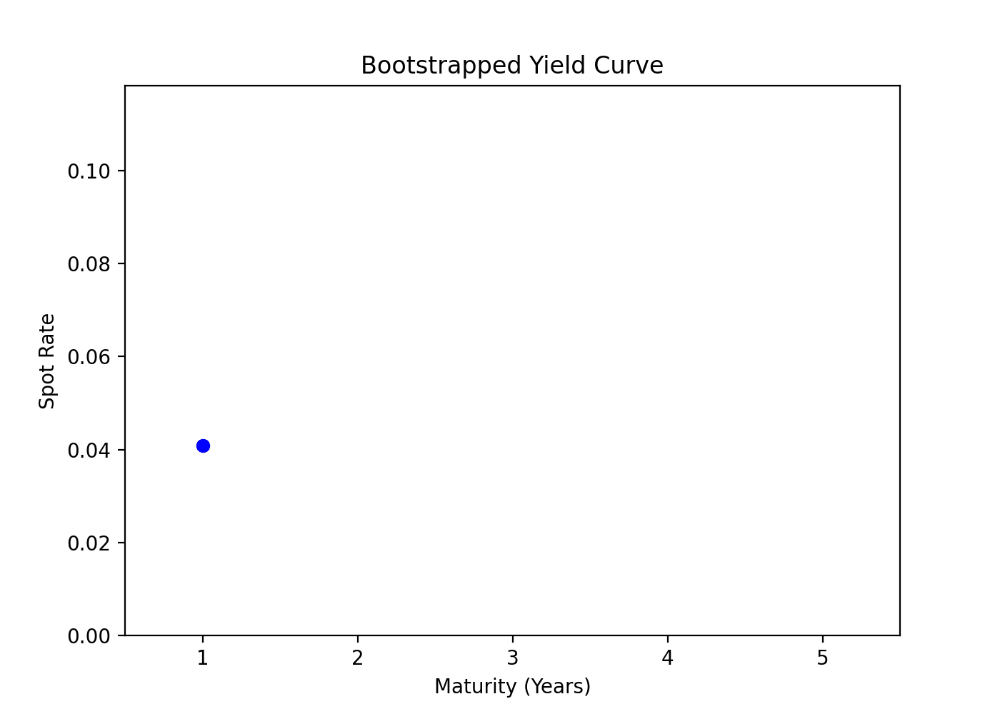

Overview
Yield curve construction is fundamental in fixed income analytics. The bootstrapping method extracts zero-coupon (spot) rates from bond prices, and interpolation fills in rates for non-observed maturities.
Bootstrapping Zero-Coupon Curve
For a zero-coupon bond, the spot rate \( r \) is found from the price \( P \) and face value \( F \):
\[
P = \frac{F}{(1 + r)^T}
\]
For coupon bonds, solve recursively using known spot rates for earlier maturities.
C++ Example: Bootstrapping Spot Rates
#include <iostream>
#include <vector>
#include <cmath>
int main() {
// Example: 1Y, 2Y, 3Y bonds (annual coupons)
std::vector<double> prices = {98.0, 95.0, 92.0};
std::vector<double> coupons = {2.0, 2.5, 3.0};
double face = 100.0;
std::vector<double> spots;
for (size_t i = 0; i < prices.size(); ++i) {
double sum = 0.0;
for (size_t j = 0; j < i; ++j)
sum += coupons[i] / std::pow(1 + spots[j], j + 1);
double numer = coupons[i] + face;
double denom = prices[i] - sum;
double r = std::pow(numer / denom, 1.0 / (i + 1)) - 1.0;
spots.push_back(r);
std::cout << "Year " << (i+1) << ": Spot rate = " << r*100 << "%\n";
}
return 0;
}
Visualization
The GIF below animates the construction of a yield curve from synthetic bond data.

Bootstrapped spot rates are shown for increasing maturities.